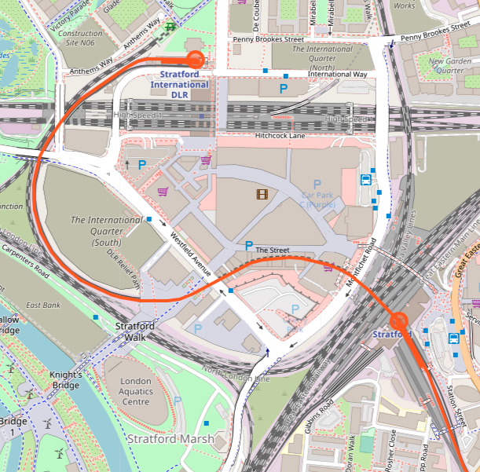
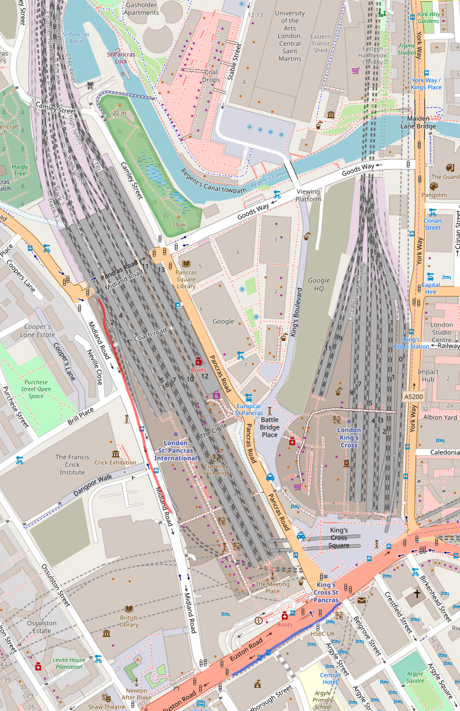

Stratford 与 King's Cross St. Pancras 间的通勤交通
Contents
背景
几天前看到了 Geoff Marshall 的视频 Which Is Faster? High Speed 1 vs The Tube，比较了多条 Stratford 与 King’s Cross St. Pancras 之间的交通线路。但是如果您在这两地之间通勤，由于视频中的比赛在非高峰时段进行，较为随意地选择了出发地和目的地，且只进行了一次，参考意义可能有限。我正巧也正在研究这两地之间的通勤方案，现将成果整理在这里。
本文主要以长期通勤为前提，以节约时间和票价为目的，讨论这两地之间的交通方案。
相关车站
Stratford
Stratford (SRA / STR) 站有 Central Line、Jubilee Line、Overground、Tfl Rail、两条 DLR、多条 Greater Anglia 火车、偶尔的 c2c 火车线路和一些不停靠的客货列车。日后将有 Elizabeth Line 通过，取代现在的 TfL Rail。
Stratford International (SFA) 站有 Southeastern 运营的 Class 395 Javelin 高速列车和一些不停靠的 Eurostar 列车。
Stratford International (STI) 站有一条终止于此的 DLR。
King’s Cross St. Pancras
King’s Cross St. Pancras (KIC) 站有 Circle Line、Hammersmith & City Line、Metropolitan Line、Piccadilly Line、Victoria Line、Northern Line。
King’s Cross (KGX) 站有许多去往北方的和本文没有什么关系的火车线路。尽管有 Thameslink 服务到达该站，但由于该站是个终点式车站，它们也只去往北方。
St. Pancras (STP) 站有 Southeastern 运营的高速列车、贯穿南北的 Thameslink、去往北方的 EMR 和一些 Eurostar 列车。
票价
首先，如果您还在用单程纸票，赶紧办个 Oyster 吧，押金可退。以下注明 Railcard / Gold card 的票价需要您将优惠绑定到 Oyster 上（目前不支持 Contactless）方可使用，且并不是所有 Railcard 都提供这项优惠。
SFA - STP
这两站间只有一条线路，即 HS1 上的高速列车。该线路不按 Fare Zone 收费，不接受一般 Travelcard，不贡献任何 Cap，不受任何 Cap 影响，Season Ticket 没有学生优惠。Travelcard 必须有 Plus HS1 字样方可乘坐该线路。要获得这样的 Travelcard，您必须购买带有 Travelcard 的、来自 London 外的、允许乘坐 HS1 线路的火车 Season Ticket。而这样的 Travelcard 只能是 Zone 1-6。显然，如果您的通勤线路只是 Stratford - King‘s Cross，这是很不划算的。
近几个月 TfL Single fare finder 查询这条线路票价时总是报错。据 LT FARES 的数据和实际经验，目前该线路单程票价为：
- Peak: £5.90（2020 涨价）
£5.70 - Off-peak: £4.10（2020 涨价）
£4.00 - Off-peak (Railcard / Gold card): £2.70（2020 涨价）
£2.65
Season Ticket：
- Weekly:
£34.60 - Monthly:
£132.90 - Annual:
£1,384.00
SRA / STR / STI - KIC / STP / KGX
剩下的路线都按区收费，也就是 Zone 1 到 Zone 2 的标准票价。接受各种 Travelcard，适用各种 Cap，Travelcard 有学生优惠，Travelcard 能乘坐其他区内线路。
单程票价：
- Peak: £2.90
- Off-peak: £2.40
- Off-peak (Railcard / Gold card): £1.60
Cap:
- Daily Anytime / Off-peak: £7.20（2020 涨价）
£7.00 - Daily Off-peak (Railcard / Gold card): £4.75（2020 涨价）
£4.60 - Weekly (Contactless Only): £36.10（2020 涨价）
£35.10
Travelcard：
- Weekly: £36.10（2020 涨价）
£35.10 - Monthly: £138.70（2020 涨价）
£134.80 - Annual: £14,44.00（2020 涨价）
£1,404.00
Travelcard (18+ Student):
- Weekly: £25.20（2020 涨价）
£24.50 - Monthly: £96.80（2020 涨价）
£94.10 - Annual: £1,008.00（2020 涨价）
£980.00
Day Travelcard 由于价格显然不如 Daily Cap 已省略。
除此之外，还有一种 Citymapper 提供的订阅制票 Citymapper PASS。目前的价格是每周 £31.00。该卡的优势是如果您外出游玩，可以暂停服务，只支付每周 £1.00 的保卡费，且在开卡 4 周以后可以随意取消。
内部交通
Stratford
DLR
SRA 和 STI 之间的 DLR 频次不高，约为 8 - 10 分钟一班，即便是 Peak 期间也是如此。且轨道有绕路，需要两分钟才能到达。
如果您持有 HS1 上的 Season Ticket，但没有 Travelcard，您将需要为了这段两分钟的 DLR 单独缴费。

巴士
SRA 和 SFA 之间有 308 / 241 等公交线路，但要钱。如果您想从 SRA 的南边坐车，则还需要绕路、堵车，比较慢。
在 Queen Elizabeth Olympic Park 里头有个叫 Here East 的办公区，它们运行一个经停 SRA（北边） 和 SFA 的班车，五分钟一班，据说不要钱也不要证件。
步行
从 SRA 的北边前往 SFA 非常简单，约摸有四种走法，如图所示。

其中红线和蓝线位于地面（从 SRA 走出来的那一层，Westfield 标为 LG），绿线和紫线位于天桥那层（Westfield 标为 G）。可以看到通过红线走小门可以省不少路。另外有时 Westfield 室内部分遇到情况不开门我们就无法从中穿过，此时可以走紫线。
如果您需要从 SRA 的南边前往 SFA，则需要先上两层，从上方天桥经过 SRA，再下一层前往 SFA。其实，您也许可以通过穿过 SRA 来节约一些时间和体力。
如果您使用 Oyster / Contactless 在 SFA 乘车，您可以用同一张卡进入 SRA，穿过 SRA，上一层前往 SFA。根据 TfL 的说明，您会在离开 SRA 时被收取 £8.10 的最高票价，但会在进入 SFA 的那一刻自动退款。
如果您使用单独的 Season Ticket 在 SFA 乘车，Oyster and National Rail（非官方） 的这篇文章认为 Contactless 两分钟以下同站进出不扣钱。您也许可以使用一张 Contactless 来穿过车站，但我没有尝试过。
King’s Cross St. Pancras
靠走。
地下指示牌提示并不是很清晰，建议花点时间探探路。牌子上写 King’s Cross 火车站向前走并不代表火车站在前面。很可能您头顶上前后左右都是火车站，只是前面有个比较近的出口。可是也许通过另一个较远的出口前往您的目的地更为便捷。
搭车方案
SFA - STP
乘坐直达高速列车从 SFA 前往 STP。
这趟车平峰期间约 15 分钟一班，但 08:00 - 09:00 之间进城方向安排了十趟车，16:50 - 17:55 之间出城方向也安排了十趟车。抓住这段时间可以少等车。
有一个省钱的方案是乘坐 09:29 从 SFA 出发的列车，这样可以利用 TfL 三分钟的 grace period 在 09:27 刷卡进站，快速下楼上车，以获得 £2.70 的 Off-peak (Railcard / Gold card) 票价。但如果您选择这个方案，不建议从上文提到的红色步行路线所指的入口进站，因为您下到站台以后会发现还要向西走一段路才能见到车。这又是因为您要乘坐的列车只有 6 节车厢，而从 SFA 的名字不难看出，它在当初建设之时考虑了停靠长达 16 节或 20 节的 Eurostar 列车。
SRA / STR - LST / LIS - KIC
乘坐 Central / Tfl Rail / Greater Anglia 从 SRA / STR 到 Liverpool Street，换乘 Circle / Hammersmith & City / Metropolitan 到 KIC。
SRA - LST vs SRA - LIS
- 火车在地面上开行，有信号；Central 没有。
- 火车拥挤程度较 Central 稍好。
- 火车频次较少；Central 大部分时候最多等一分钟。
- 火车从 LST 出发时站台不确定；Central 就一个站台。
- 火车直达；Central 需要停站。
- 高峰期火车会变慢，大约需要 10 分钟；高峰期 Central 很可能由于前车上下客导致站间停车。
- 火车换乘需要多走路。
Tips
- 早高峰时段 Greater Anglia 去往 LST 的火车在 SRA 只下不上。如果您想乘坐火车，请选择 TfL Rail。
- Central Westbound 在 STR 开两侧门。如果您从南边进站，则可以直接从中间走上站台，不需要进入地道
- 在 STR 登上 Central 时时建议选择列车前进方向第一车厢后门或第二车厢前门方便换乘 Circle / Hammersmith & City / Metropolitan。
- 在 KIC 登上 Circle / Hammersmith & City / Metropolitan 时建议选择列车前进方向第五（倒数第三）节车厢方便换乘 Central。
- 在 LIS 登上 Central 时建议选择列车前进方向第一、第六或第八节车厢。如您需要前往 SRA 南边的出口，请选择第六车厢并从该车厢门口的地道出去。
- 在 LIS 登上 Circle / Hammersmith & City / Metropolitan 时可选列车前进方向第二、第六或第七节车厢。这个选择取决于您想去 KIC 附近的哪。
- Central Westbound 换 Circle / Hammersmith & City / Metropolitan 时可不按照指示牌走，有一处写有 Way Out 的楼梯通往这三条线 Westbound 的站台。
LST - KIC vs LST - FAR; ZFD - STP
由于 KIC 很大很复杂，从站台到您的目的地之间可能还有较长的路程。如下图所示，Circle / Hammersmith & City / Metropolitan 的站台在蓝线处，如果您的目的地在北边则可能有相当长的路要走。此时不妨选择在 Farringdon 换乘 Thameslink。它的站台在红线处，可能可以节约部分时间和路程。这个方案：
- 要求您熟悉 Farringdon 的换乘路线和当天 Thameslink 的时刻，不然可能花费更多时间。
- 在 Thameslink 上基本都有座。
- 可以经过废弃的 King’s Cross Thameslink 站。

SRA - HHY; HII - KIC
乘坐 Overground 到 Highbury & Islington，换乘 Victoria 坐一站到 KIC。
我没有坐过，但是根据开头提到的视频里的内容不是很快。这条 Overground 发车间隔 5 - 10 分钟，可能带来较长时间的等待。
尝试坐了一次，发现 HII 和 HHY 之间需要走较长一段路，且在 HHY 不容易挤上 Overground。幸运的是我正好坐到了一班不停站直达 SRA 的车，非常快。如果能够稳定地坐到这样的车，这个方案就很棒棒，不然还是算了。
STR - BAN - KIC
乘坐 Central 到 Bank，换乘 Northern。
在 Bank 要走好长一段路。据我测试会多花许多时间。且由于 Northern 在城里分叉，从 KIC 出发可能非常拥挤。
有用的工具
- Citymapper：导航、看车次
- OpenStreetMap：查看站台、出口位置
- Station Master（收费）：查看车站（不含纯 National Rail 站）内设施（电梯、售票机等）、内部结构、车厢选择、台阶级数等
- LT FARES：查看票价
- BR TIMES：查看时刻表、站台
- TIGER：查看实时车次信息、车厢数
Author SEIAROTg
LastMod 2019-12-07